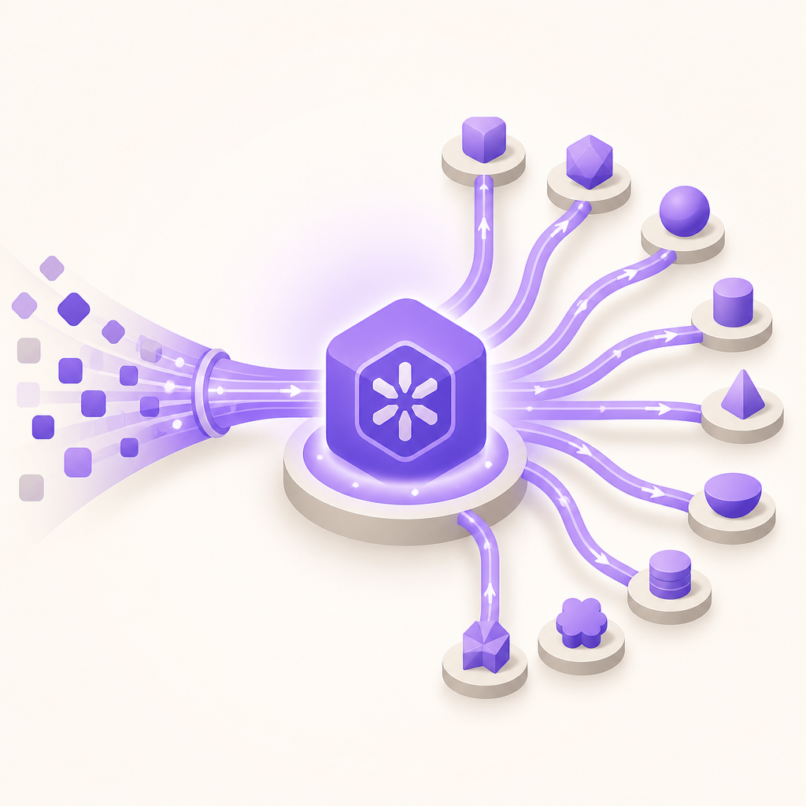

How We Publish MCP Servers and Claude Skills to Every Marketplace — Our 2026 Playbook

Most builders push their MCP servers and Skills to GitHub and wonder why nobody finds them. After shipping two of our own across 13 catalogs, here's the exact playbook we use — what's automated, what's manual, and where most authors lose a week.
- There are 13 public catalogs for MCP servers and Claude Skills in 2026. Most accept a submission in 5–15 minutes per platform.
- Smithery moved to hosted-only for MCP: stdio servers can't publish via the CLI anymore. Skills still publish through a GitHub URL.
- Skills auto-index from
SKILL.mdfiles in public GitHub repos. MCP servers mostly need a manual submission per platform, and the official registry needs a published PyPI/npm package plus themcp-publisherCLI. - Optimal repo strategy: monorepo for Skills (catalogs parse each
SKILL.mdseparately), one repo per MCP (catalogs index by repo URL, so monorepos lose visibility). - Realistic effort: 5–7 hours to publish across every platform, then 1–2 weeks for indexers to crawl and surface your work.
- We shipped two of our own —
necl-hn-mcpandnecl-content-poster— across these catalogs using the exact sequence below.
Why this matters
Building MCP servers and Claude Skills is the easy part. Getting them in front of Claude users is the hard part — and most builders skip it entirely, push to GitHub, and wonder why nobody finds their work.
We at NeCL publish open-source tooling as a way to earn inbound for our paid AI engineering work. Every MCP we ship is also a marketing surface. The catalogs distribute the artifact; our README turns a curious reader into a booked conversation.
This is the exact playbook we run internally, written up for anyone who wants to follow it. None of it is theory — we shipped necl-hn-mcp and necl-content-poster through these same steps this quarter, and the closing section covers what actually happened.
What you'll need
- A public GitHub repo with:
README.md, aLICENSE(MIT/Apache-2.0), and the actual server or skill files. - For MCP: a
server.jsonmanifest, an optionalsmithery.yaml, and apyproject.tomlorpackage.json. - For the official registry specifically: a package published to PyPI or npm (the registry validates ownership against it).
- For a Skill: a
SKILL.mdwith YAML frontmatter (name,description,author). - ~6 hours of submission time, comfortably spread across a week.
The 13 catalogs at a glance
| Catalog | Type | Submission method | Review time | Cost |
|---|---|---|---|---|
| mcp.so | MCP | URL form | minutes–2 days | Free |
| registry.modelcontextprotocol.io | MCP | mcp-publisher CLI |
minutes (automated) | Free |
| glama.ai/mcp | MCP | Auto-crawl + form | 2–5 days | Free |
| awesome-mcp-servers (punkpeye) | MCP | GitHub PR | 1–7 days | Free |
| Smithery (hosted) | MCP | Connect repo, deploy | minutes–1 day | Free tier |
| mcpmarket.com | MCP | URL form | 1–5 days | Free |
| skillsmp.com | Skills | Auto-index + URL form | 24–48 h | Free |
| claudeskills.info | Skills | Auto-index + form | 1–3 days | Free |
| claudemarketplaces.com | Both | Form | 1–7 days | Free |
| claudepluginhub.com | Both | Form + branded page | 1–5 days | Free |
| daymade/claude-code-skills | Skills | GitHub PR (monorepo) | 1–7 days | Free |
| Smithery (Skills) | Skills | GitHub URL | minutes | Free |
| skills.sh | Skills | Telemetry (no form) | instant on first install | Free |
Every catalog below is free to list on. The detail that changes per platform is how you get in and how long you wait.
MCP server catalogs
mcp.so
The biggest aggregator (20,000+ servers). It pulls listings from several upstream sources, including awesome-mcp-servers, so a server often appears here even before you submit directly.
How to submit: Open the "Submit" form at mcp.so/submit, paste your GitHub repo URL, and fill in name, category, and a one-line description. It reads your README and server.json for the rest.
Review time: Often minutes for the automated parse; up to ~2 days if a human spot-checks it.
Common rejection reasons: Dead repo URL, missing README, no clear install instruction, or a description that doesn't say what the server actually does.
Cost: Free.
registry.modelcontextprotocol.io
The official Anthropic-backed registry. This is the credibility anchor — downstream catalogs and AI search trust it. It does not accept pull requests.
How to submit: You publish through the mcp-publisher CLI, and it requires a package already live on PyPI or npm, plus a server name in the form io.github.<owner>/<name>.
# 1. Publish your package first (PyPI or npm)
# e.g. for Python: uv build && uv publish
# 2. Install and authenticate the publisher
npm install -g @modelcontextprotocol/publisher
mcp-publisher login github
# 3. Publish the registry entry from your repo
mcp-publisher publish
The name namespace ties the entry to your GitHub account, which is how the registry verifies ownership — there's no manual approval queue.
Review time: Minutes. Validation is automated against your package and GitHub identity.
Common rejection reasons: No published package to validate against, a name that doesn't match the io.github.<owner>/<name> format, or a server.json that fails schema validation.
Cost: Free.
glama.ai/mcp
A curated catalog organized by use case, with quality scoring and security checks per server. It crawls GitHub automatically, so you may already have a stub here.
How to submit: Use the claim/submit form to attach your repo, or wait for the crawler. Glama runs an inspection (does the server build, does it expose tools cleanly) and assigns a quality grade.
Review time: 2–5 days, because the inspection is more thorough than a simple parse.
Common rejection reasons: Server fails Glama's automated build/inspection, missing license, or tools that error on a basic handshake.
Cost: Free.
awesome-mcp-servers (punkpeye)
The community awesome-list at github.com/punkpeye/awesome-mcp-servers. It feeds several downstream catalogs, so a merged line here cascades outward.
How to submit: Open a pull request adding one line to the right category, in the repo's exact format (link, emoji language/runtime tags, one-sentence description). There's an agent fast-track: put 🤖🤖🤖 in the PR title to flag it for the maintainer's automated review path.
Review time: 1–7 days, faster with the fast-track tag.
Common rejection reasons: Wrong category, format that breaks the list's lint, duplicate entry, or a description that's marketing copy instead of a plain summary.
Cost: Free.
Smithery (hosted-only for MCP)
Smithery was the go-to CLI publisher for stdio servers. In 2026 it moved to hosted-only for MCP — it won't take a plain stdio server anymore. To list an MCP, you connect your repo and Smithery deploys it as a hosted HTTP server.
How to submit: Connect your GitHub repo in the Smithery dashboard, add a smithery.yaml, and let it build and deploy. The server then runs on Smithery's infrastructure with a hosted endpoint.
Review time: Minutes to ~1 day, dominated by the build/deploy step.
Common rejection reasons: The server can't run as a hosted HTTP service (it assumes local stdio only), a missing or invalid smithery.yaml, or a failed build.
Cost: Free tier for hosting; you may hit limits at scale.
If your MCP is a local-only stdio tool, the cleaner path for one-click install is Anthropic's
.mcpbbundle (below) rather than fighting Smithery's hosting model.
mcpmarket.com
A general MCP directory with category browsing and search. Useful for incremental impressions and a backlink.
How to submit: Submit your repo URL through the site's form with a name, category, and short description.
Review time: 1–5 days, usually a light human check.
Common rejection reasons: Duplicate of an existing listing, vague description, or a repo with no install instructions.
Cost: Free.
The .mcpb bundle (for local stdio servers)
Because Smithery dropped stdio, the right answer for most local MCP authors is Anthropic's mcpb bundler. It packages your server into a single .mcpb file users drag into Claude Desktop for a one-click install.
npm install -g @anthropic-ai/mcpb
cd your-mcp-repo
mcpb init # generates manifest.json
mcpb pack # creates the .mcpb bundle
Drop the bundle into Claude Desktop → Settings → Developer for instant install, and attach it to a GitHub Release so people have a download link. This isn't a catalog, but it removes the hosting requirement that catalogs like Smithery now impose.
Claude Skills catalogs
skillsmp.com
The main Skills aggregator (hundreds of skills listed). It auto-indexes public repos that contain SKILL.md files, so a monorepo of skills shows up as multiple entries.
How to submit: Either wait for the crawler, or paste your repo URL into the submit form to jump the queue.
Review time: 24–48 hours for the auto-index; faster if you submit the URL directly.
Common rejection reasons: Missing or malformed SKILL.md frontmatter (no name/description), private repo, or no license.
Cost: Free.
claudeskills.info
An open-source-only Skills catalog with clean categorization. It auto-indexes from GitHub and also takes a manual submission.
How to submit: Submit the repo URL through the form, or let the crawler pick up your SKILL.md.
Review time: 1–3 days.
Common rejection reasons: Closed-source or unclear license, SKILL.md with no usable description, or a skill that's really just a prompt with no instructions.
Cost: Free.
claudemarketplaces.com
A multi-type directory covering Skills, MCP servers, and plugins together. Good for reaching people who browse by "what can I add to Claude" rather than by artifact type.
How to submit: Use the form, pick the type (Skill / MCP / plugin), and paste the repo URL with a description.
Review time: 1–7 days, human-reviewed.
Common rejection reasons: Wrong type selected, thin description, or a repo that doesn't make clear what installs and how.
Cost: Free.
claudepluginhub.com
A directory that also lets you create your own branded sub-marketplace — a page like claudepluginhub.com/yourname that groups all your artifacts. That branded URL is a real SEO and credibility asset.
How to submit: Register, create your namespace/page, then add each Skill or plugin to it via the form.
Review time: 1–5 days.
Common rejection reasons: Incomplete profile, missing artifact metadata, or duplicate submissions across namespaces.
Cost: Free.
daymade/claude-code-skills
A curated monorepo marketplace on GitHub. Unlike a one-line awesome-list, this one hosts the skills, so the PR is heavier.
How to submit: Fork the repo, copy your skill folder into it, add an entry to its marketplace.json, add a row to the README table, then open a full pull request. The maintainer reviews the actual skill, not just a link.
Review time: 1–7 days, depending on review depth.
Common rejection reasons: Skill folder doesn't follow the repo's layout, marketplace.json entry malformed, missing README row, or the skill overlaps an existing one without adding value.
Cost: Free.
Smithery (Skills)
Smithery dropped stdio MCP, but it still publishes Skills through a GitHub URL. This is the path our own skill uses.
How to submit: Point Smithery at your public repo / SKILL.md URL. No hosting required, unlike its MCP path.
Review time: Minutes.
Common rejection reasons: Private repo, missing SKILL.md, or invalid frontmatter.
Cost: Free.
skills.sh
A telemetry-driven catalog tied to the skills CLI (which works with Claude Code, Cursor, Codex, OpenCode, and 70+ agents). There is no submit form.
How to submit: You don't. The first time anyone runs npx skills add owner/repo, the listing is created automatically from that install event. So to seed it, install your own skill once:
npx skills add adjacentai/necl-skills
That single command registers the listing. From then on, installs and usage feed the catalog's ranking.
Review time: Instant — the listing exists the moment the first install fires.
Common rejection reasons: None in the usual sense; if nobody installs, nothing lists. A broken repo simply won't resolve.
Cost: Free.
Repo strategy — monorepo vs separate repos
This decision matters more than people expect, because each catalog indexes differently.
| Catalog | Indexes by | Monorepo result |
|---|---|---|
| skillsmp.com, claudeskills.info | per SKILL.md file |
✅ Multiple entries from one repo |
| Smithery (Skills), skills.sh | per SKILL.md / install |
✅ Multiple entries |
| mcp.so, glama.ai | per repo URL | ❌ One entry per repo — monorepo hides extra servers |
| awesome-lists, daymade | manual lines / folders | ✅ Add as many entries as you want |
Conclusion:
- Skills: one monorepo with multiple
SKILL.mdfolders. The Skills catalogs parse each folder individually, so you get many listings from one repo. - MCP servers: one repo per server. The MCP catalogs index by repo URL, so a monorepo collapses several servers into a single listing and buries the rest.
The .claude-plugin/marketplace.json trick
Here's the move most builders miss. Claude Code can subscribe to a plugin marketplace that is just a GitHub repo with a .claude-plugin/marketplace.json file at its root. Your skills repo can be that marketplace.
Add the file:
{
"name": "necl-skills",
"owner": { "name": "NeCL", "url": "https://neclco.com" },
"plugins": [
{
"name": "necl-content-poster",
"source": "./necl-content-poster",
"description": "Turn one draft into Telegram, LinkedIn, and Threads posts."
}
]
}
Then anyone adds your whole catalog to Claude Code in one command:
/plugin marketplace add adjacentai/necl-skills
/plugin install necl-content-poster@necl-skills
Why this is worth the five minutes: it turns your repo into a subscription channel. Every future skill you commit to that repo becomes installable by everyone who already subscribed, with no resubmission to any catalog. You publish once to the catalogs for discovery, and the marketplace.json becomes your owned distribution channel for everything that comes after.
Anatomy of a README that converts
A marketplace listing is a click-through to your README. That page does two jobs: get the install, and turn the installer into inbound. Most READMEs do neither because they read like internal docs.
What we put in every one, in order:
- One-line value, above the fold. What it does and who it's for, in a single sentence — before any badge wall. Catalogs often scrape this exact line for the listing description.
- A copy-paste install block that works first try. The biggest install killer is an install snippet that needs editing. For MCP we use a no-package-registry path so it works the moment they paste it:
json
{
"mcpServers": {
"necl-hn": {
"command": "uvx",
"args": ["--from", "git+https://github.com/adjacentai/necl-hn-mcp.git", "necl-hn-mcp"]
}
}
}
- A "try it" example with real prompts. Two or three lines a user can paste into Claude immediately. People install things they can picture using.
- A short tool/feature table. Scannable, not paragraphs. Names, inputs, one-line purpose.
- Brand attribution that's present but not loud. "Built by NeCL" near the top, linked. The README is the only place you control on every catalog.
- A
Need a custom one?section near the bottom with a single contact link tohttps://neclco.com/#contact. This is the conversion line. One CTA, no alternatives. - License and a one-line "auditable in X lines" note for trust. Small, readable source code is itself a selling point.
The pattern is simple: the top of the README earns the install, the bottom earns the inbound, and there's nothing in the middle that makes someone hesitate.
The 5-step launch sequence
- Prep (1 hour): Write the README using the anatomy above. Add the
.claude-plugin/marketplace.jsonto your skills repo. Confirm the install snippet works from a clean machine. - Push to public GitHub (15 min): Two repos —
your-skills/(monorepo) andyour-mcp-name/(one per server). Add GitHub topics likemcp,claude,claude-skillfor search discoverability. - Submit the forms (30 min): mcp.so, glama.ai, mcpmarket.com, claudemarketplaces.com, claudepluginhub.com, skillsmp.com, claudeskills.info — one browser tab each, paste the URL, done.
- Run the CLIs and PRs (1–1.5 h):
mcp-publisher publishfor the official registry,npx skills add owner/repoto seed skills.sh, then PRs to awesome-mcp-servers (with the🤖🤖🤖fast-track) and daymade/claude-code-skills (full folder +marketplace.json+ README row). - Wait 1–2 weeks for indexers to cascade. Downstream catalogs pick up from the awesome-lists, and AI search picks up from Google once the listings settle.
Common mistakes
- Monorepo of MCP servers. The MCP catalogs index by repo URL, so all but one server vanish from the listing. One repo per MCP.
- Splitting Skills into separate repos. The opposite mistake — Skills catalogs parse per
SKILL.md, so a monorepo gets you more listings, not fewer. Keep skills together. - Trying to push a stdio server to Smithery. It won't take it anymore. Use the hosted path only if you actually want to host, otherwise ship an
.mcpbbundle. - Opening a PR to the official registry. It doesn't accept PRs. You need a published PyPI/npm package and the
mcp-publisherCLI. - An install snippet that needs editing. Every manual edit drops your install rate. Use a path (like
uvx --from git+...) that runs on paste. - Marketing copy in awesome-list descriptions. Maintainers reject hype. Write a plain, factual one-liner that says what it does.
- No license file. Several catalogs auto-reject repos without a clear license. Add MIT or Apache-2.0 on day one.
- Forgetting the contact line. A README with no CTA is a missed lead. The whole point of publishing open source for a studio is the inbound at the bottom of the page.
What we shipped
We ran this exact playbook on two of our own artifacts this quarter:
necl-hn-mcp— a Hacker News MCP server for AI agents. Five tools, no API key, around 200 lines of Python, MIT-licensed. github.com/adjacentai/necl-hn-mcpnecl-content-poster— a Claude Skill that turns one draft into Telegram (RU) + LinkedIn (EN) + Threads (EN) posts. Lives in our skills monorepo. github.com/adjacentai/necl-skills
Both are MIT-licensed and built straight from production patterns we already use internally.
What we learned shipping our own
A few things only became obvious once we'd actually pushed necl-hn-mcp and necl-content-poster through the catalogs:
The MCP and Skill paths barely overlap. The MCP went to mcp.so, Glama, and Smithery's hosted track; the Skill went to Smithery's GitHub-URL track and skills.sh. Treating them as one workflow wastes time — they have different manifests, different reviewers, and different failure modes.
Smithery's split is the gotcha. Our stdio HN server couldn't go the old Smithery route, so we used the hosted path there and leaned on the .mcpb bundle for local install. The Skill, meanwhile, published to Smithery fine through its GitHub URL. Same brand, two completely different Smithery experiences.
skills.sh needs you to install your own thing first. There's no form, so the listing didn't exist until we ran npx skills add adjacentai/necl-skills ourselves. Easy to miss if you're waiting for a submission button that never appears.
The official registry is the most friction and the most worth it. Getting a package onto PyPI and running mcp-publisher took the longest, but it's the entry every downstream catalog and AI search trusts most. We'd do it first next time, not last.
The README does the selling, not the catalog. Listings are a one-line description and a link. Every install decision and every inbound lead happened on the README page, which is why we treat it as the real landing page and the catalogs as traffic.
See also
- Hacker News MCP for Claude — Free, No API Key — the pilot MCP from this playbook
- Claude Skills + Cross-Platform Content Generator — the pilot Skill from this playbook
- necl-hn-mcp on GitHub — full MCP repo
- necl-content-poster on GitHub — full Skill repo
- Stop Using GPT-4 for Everything — related: AI cost optimization
- What is NeCL — about the studio
FAQ
Do I need to be on PyPI or npm to publish an MCP server?
For most catalogs, no — use `uvx --from git+https://github.com/you/repo.git your-package` in the install instructions and skip the registry. The exception is the **official** registry (registry.modelcontextprotocol.io), which requires a published PyPI or npm package to verify ownership.
Is Smithery still worth it for stdio MCPs?
Only if you're willing to deploy your server as a hosted HTTP service, since Smithery is hosted-only for MCP now. For local stdio servers, ship an `.mcpb` bundle instead — you get the same Claude Desktop one-click install with no hosting bill.
How do I publish to the official MCP registry without a PR?
The registry doesn't take PRs. Publish your package to PyPI/npm, install the `mcp-publisher` CLI, authenticate with GitHub, name your server `io.github.<owner>/<name>`, and run `mcp-publisher publish`. Validation is automated.
How long until catalogs actually surface my work?
Forms and PRs: 1–7 days for human review. Auto-index (Skills catalogs reading `SKILL.md`): 24–48 hours. Cascade effects (mcp.so picking up from an awesome-list, AI search picking up from Google): 1–3 weeks for first surface.
What's the difference between monorepo and one-repo-per-artifact?
Skills catalogs index per `SKILL.md`, so a monorepo gives you multiple listings — keep skills together. MCP catalogs index per repo URL, so a monorepo collapses several servers into one listing — give each MCP its own repo.
How does skills.sh listing work if there's no submit form?
It's telemetry-driven. The first `npx skills add owner/repo` install event creates the listing automatically. Seed it by installing your own skill once.
Can I publish private MCP servers and Skills?
No. The public catalogs require public GitHub repos. For client-private work, run your own internal catalog with a `.claude-plugin/marketplace.json`, or share the `.mcpb` bundle file directly.
Will publishing open source actually drive paid work?
That's our whole thesis for doing it. The catalogs supply discovery, and a README that ends with a `https://neclco.com/#contact` link converts a slice of those readers into conversations. We treat each listing as cold outreach with the brand context already established.
Need help building or distributing your own MCP server or Claude Skill? We do this work for hire — from architecture to publishing across all 13 catalogs. .
Tell us about your project